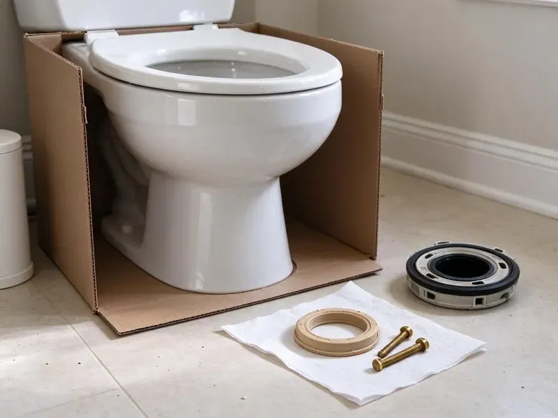

Toilet Bowl Replacement in Somersworth, NH
Bowl cracked at the bolt holes? FVR Plumbing replaces it in Somersworth, NH and inspects the flange and subfloor.
- Old Bowl Hauled Away
- Floor Damage Inspected
- Upfront Pricing
- Matched Bowls
Replace a Cracked Bowl Before It Floods in Somersworth, NH
We price bowl-only and full replacement side by side.
Licensed Toilet Bowl Replacement in Somersworth, NH
FVR Plumbing plumbers carry tank-to-bowl gasket kits, stainless bolts, wax and waxless seals and flange repair rings, so the only part that has to be ordered is the bowl itself. Common white bowls are often in stock. Colored bowls usually take a day or two.
Our expertise includes:
- Careful removal of cracked bowls
- Subfloor inspection after removing damaged bowls
- Bowl removal and disposal

Additional Bathroom Plumbing Services in Somersworth, NH
From toilets to showers, our bathroom plumbing team in Somersworth, NH repairs, installs, and replaces every fixture with clean, code-compliant work.


Customers
Why Choose FVR Plumbing for Toilet Bowl Replacement in Somersworth, NH?
A cracked bowl often leaks into the floor for weeks before anyone notices, so we check the subfloor every time the old bowl comes off. Wet plywood keeps rotting if nobody looks. Finding it during the swap is much cheaper than finding it later from the room below.
- Quality Bowls, We source matching bowls from the original manufacturers.
- Clear Estimates, Bowl-only and full replacement prices are side by side.
- Skilled Technicians, We set bowls without cracking porcelain.
Citywide Coverage
Suburbs and nearby towns around Somersworth, NH get the same service and stock, with no surcharge for being a few miles past the city line. Ask about your address. Homes on the edge may get a slightly wider window, but the price does not change.
Experienced Team
The FVR Plumbing crew is licensed and insured, and every plumber has set enough bowls to snug closet bolts by feel without cracking new porcelain. That takes practice. Until they have it down, newer techs work alongside a senior plumber.
Safety-First Approach
Sewer gas comes up the open drain once the old bowl is off, so we plug it with a rag right away and keep it plugged until the new seal is set. Gloves stay on throughout. The flange area gets disinfected before the new wax goes on.
Trusted Certified Somersworth Plumbing Services Professionals
At FVR Plumbing, we are proud to offer certified plumbing services throughout Somersworth, NH. Credentials matter in this trade. Every repair, install and maintenance visit follows strict safety and quality rules, and the plumbers doing the work carry recognized industry credentials.
Call Us Now PHCC Plumbing Contractor Recognition
PHCC Plumbing Contractor Recognition Better Business Bureau (BBB) Accreditation
Better Business Bureau (BBB) Accreditation Angi Certified Pro
Angi Certified Pro ISO 9001 Quality Management Certification
ISO 9001 Quality Management CertificationWhat a Bowl Swap Covers in Somersworth, NH
Emergency Bowl Replacement in Somersworth
Shut the angle stop behind the toilet the moment you see water coming from a cracked bowl, then pull towels around the base to slow the spread. Then call us. We stop the leak, remove the broken bowl safely and install a replacement or a full new toilet if no match is on hand. We also check for water in the floor below.

Bowl Replacement Versus Full Toilet Replacement in Somersworth, NH
Bowl-only swaps make sense when the tank is newer and the bowl is still made, since a matched bowl often costs $100 to $350 while a new basic toilet starts around $200. Labor is similar either way. If the tank is old or the model is discontinued, a full replacement usually wins, and we show you both prices.
Old Toilet Upgrades in Somersworth, NH
Bowls from before 1994 were built for 3.5 gallon flushes or more, and pairing one with a new low-flow tank does not work because the trapway and rim are sized for the larger volume. Bowl and tank have to match. Upgrading an old toilet usually means replacing both, and we will price it that way.
Tank-to-Bowl Leak Repair and Replacement in Somersworth
Drips from the bolts between the tank and bowl usually mean a flattened gasket or rusted bolts, but sometimes the porcelain around a bolt hole has cracked. We look closely before quoting. A gasket and bolt kit fixes the first case, and a cracked bolt hole means a new bowl with stainless or brass hardware.
Toilet Bowl Replacement for Older Homes in Somersworth, NH
Houses built before the 1970s often have a lead closet bend or a cast iron flange caulked with oakum, and those need gentle handling when the bowl comes off. Old pipe cracks easily. Prying on the flange is something we avoid and use repair rings or flange adapters made for cast iron, so the drain stays intact.
Wall-Hung Commercial Bowl Replacement in Somersworth, NH
Wall-hung commercial bowls sit on steel carriers inside the wall, and when one cracks we also check that the carrier bolts and the outlet gasket are still sound. Loose carriers crack bowls. Flushometer valves get reconnected and tested before anyone uses the restroom again.
Cracked Bolt Hole Repair in Somersworth
Hairline cracks near the bolt holes often start when someone tightens the closet bolts too far, and they spread a little with every flush and every sit. Sealants do not hold for long. We replace the bowl and use bolts snugged by hand, then finish with a quarter turn so the porcelain is not stressed again.

Brand-Specific Bowl Replacement in Somersworth, NH
Model numbers are stamped inside the tank, usually on the back wall, and sometimes on the back of the bowl near the floor. A photo of that stamp helps. Matched bowls come from local supply houses, and most arrive within a day or two unless the model has been discontinued.
Toilet Bowl Replacement Near Me in Somersworth, NH
A near-me search turns up call centers that sell your job to whoever is free, but we send our own licensed plumbers across Somersworth, NH. The plumber who shows up works for us. What we quote on the phone matches the invoice.
Our plumbers work out of Somersworth, so they know which supply houses carry which brands and how fast a special-order bowl actually shows up. Most arrive in a day or two. The date we give you is realistic.
FVR Plumbing at a Glance
- Fully licensed plumbing team covering Somersworth, NH
- Same-day appointments and 24/7 emergency response
- Clear written estimates, no hidden fees
- 4.9-star rated by 840+ New Hampshire customers
Somersworth Map
Somersworth Information
- Population
- 12,192
- Area codes
- Local
- Service area
- Somersworth and communities within 40 miles
- Nearby
- Dover, Rochester, Durham, Portsmouth
Water in much of New Hampshire is soft and often slightly acidic, which can slowly corrode copper pipe and cause pinhole leaks. A new bowl with a fully glazed trapway resists staining and scale in Somersworth, NH bathrooms.
Talk to a Plumber
Call FVR Plumbing for reliable plumbing work done by licensed pros in Somersworth, NH.
Our Specialized Plumbing Services in Somersworth, NH
At FVR Plumbing, you get every kind of plumbing service from one company across Somersworth, NH. From leak detection to full system installs, our team works fast and charges fair prices on homes and commercial properties alike. Take a look at our core services below:


Our Bowl Replacement Steps in Somersworth, NH
From first contact to cleanup, this is what a bowl swap in Somersworth, NH looks like.
Send the Model Number
Call (844) 442-1569 with your brand, model number or a photo. We check availability and quote it.
Source and Schedule
We pull the bowl from stock or order it from a supplier, then book the swap.
Replace and Test
We set the bowl on a new wax ring, remount the tank with new hardware and test for leaks.
Frequently Asked Questions About Toilet Bowl Replacement in Somersworth
Most bowl swaps cost $250 to $550 with the matched bowl, new seals, hardware and labor, and that number holds unless the flange or subfloor needs work. Older colors push the parts cost up. We compare it against a full toilet so you can choose.
The wax ring seals the bowl's outlet to the flange, keeping water and sewer gas from escaping at the floor every time you flush. It is used once. Every bowl swap gets a new wax or waxless seal, and a flange that sits low gets an extra-thick ring or a spacer.
For most people, no. Overtightened bolts crack new bowls, a misaligned wax ring leaks slowly into the subfloor, and a pried-on cast iron flange can crack the drain, which turns a bowl swap into a floor job. Having a plumber do it sidesteps those problems.
Two to four hours covers most bowl swaps, including the time to remove the tank and reset it on the new bowl. A damaged flange or soft floor adds time.
Not for a straight bowl swap in the same location. Moving the toilet or altering the drain line usually needs a permit in Somersworth, NH, and the inspector may want to see the rough plumbing before the floor goes back. We tell you which applies.
Visible cracks in the china, chips that go through the glaze, and a leak at the base that comes back after a new wax ring are the big ones. So does a bowl that rocks even when the flange is solid.
Just the bowl works when the tank is in good shape, the fill and flush valves are fine, and the matching bowl is still made. If the tank is also worn or cracked, the math changes. A full toilet often costs about the same at that point, and you get new tank parts too.
Replacement bowls carry the manufacturer warranty, and our workmanship guarantee covers the install. If a leak traces back to us, we make it right.
Hear From Customers Who Hired Our Plumbing Experts

Robert G.
The camera showed a full break in our clay sewer line near the street. FVR Plumbing replaced it with a trenchless pipe burst, so the only digging was two small pits in the yard. They let us watch the footage before and after.
Sewer Line Replacement · Exeter, NH
Brian W.
I smelled gas behind the dryer and called right away. The plumber found a corroded flex connector, replaced it, and pressure tested the whole line before turning the gas back on. He let me watch the gauge hold steady for fifteen minutes.
Gas Line Repair · Rochester, NH
Laura S.
Our 40 gallon tank started leaking from the bottom after thirteen years. The tech hauled the old one out, set a new unit with a fresh expansion tank, and had hot water running in about four hours. He took the old tank with him too.
Water Heater Replacement · Exeter, NH
Megan L.
Our upstairs tub drained so slowly that every shower turned into a bath. FVR Plumbing pulled a wad of hair out of the stopper and then snaked the line past the trap. Three months later it still drains fast.
Drain Cleaning · Somersworth, NHKevin O.
Before buying our house I paid for a sewer camera inspection. FVR Plumbing found a belly in the line that held standing water about forty feet from the cleanout. We used the video to get the sellers to fix it before closing.
Sewer Camera Inspection · Dover, NH
Karen W.
After our third pinhole leak in copper, we stopped patching. FVR Plumbing gave us a written plan room by room and repiped the house in PEX while we stayed in it. The crew covered our floors every morning and cleaned up every night.
Repiping · Derry, NH